Self-Supervised Proxy Task
Self-supervised RL post-training through temporal reordering, enhancing omni-modal reasoning without requiring human-annotated reasoning data.
NeurIPS 2026
1 State Key Lab of CAD & CG, Zhejiang University 2 Xiaomi Inc. 3 Ant Group
Omni-modal reasoning is pivotal to realizing artificial general intelligence, yet its advancement is critically constrained by the limited availability of large-scale, human-annotated data for complex reasoning. Motivated by this, we propose OmniJigsaw, a self-supervised reinforcement learning framework built upon a temporal reordering proxy task.
Centered on the chronological reconstruction of shuffled audio-visual clips, we successively investigate three modality orchestration strategies: (i) Joint Modality Integration (JMI), which retains the complete visual and auditory streams; (ii) Sample-level Modality Selection (SMS), which selects the dominant modality through a global decision mechanism; and (iii) Clip-level Modality Masking (CMM), which adaptively masks modalities at the clip granularity.
Our analysis reveals a “bi-modal shortcut phenomenon” in JMI and demonstrates that fine-grained CMM mitigates this issue while outperforming SMS. Incorporating lightweight puzzle-quality curation and verifiable rewards, OmniJigsaw yields substantial gains across 15 video, audio, and omni-modal benchmarks, with CMM achieving the strongest overall performance, validating its effectiveness as a self-supervised paradigm for omni-modal learning.
Self-supervised RL post-training through temporal reordering, enhancing omni-modal reasoning without requiring human-annotated reasoning data.
Fine-grained clip-level modality masking mitigates the bi-modal shortcut phenomenon in joint modality integration while outperforming sample-level modality selection.
A lightweight two-stage curation pipeline enables OmniJigsaw to adapt efficiently to massive unannotated omni-modal data.
CMM boosts Qwen3-Omni-30B by +4.38 on MLVU-Test, +2.50 on MMAR, and +1.70 on OmniVideoBench.
We investigate temporal reordering as a self-supervised objective for omni-modal reasoning, where the model is trained to recover the original chronological order from a shuffled sequence of synchronized audio-visual clips.
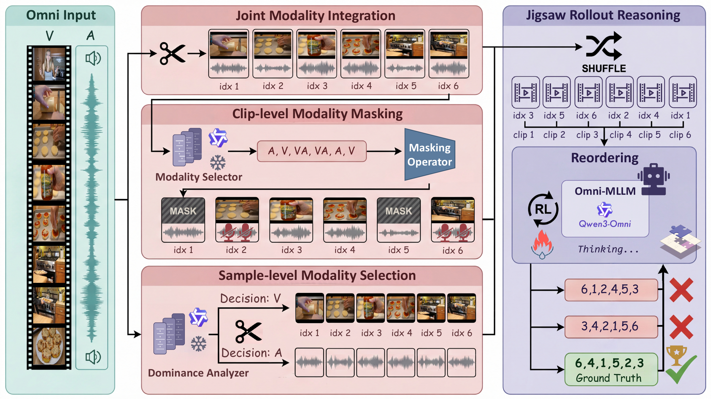
Retains the complete visual and auditory streams, providing full access to both modalities for each shuffled clip.
Selects a single modality for the entire sample and then performs reordering using only that stream.
Adaptively masks modalities at the clip granularity, encouraging the model to stitch together fragmented heterogeneous cues across video and audio when reconstructing the global timeline.
Best Performing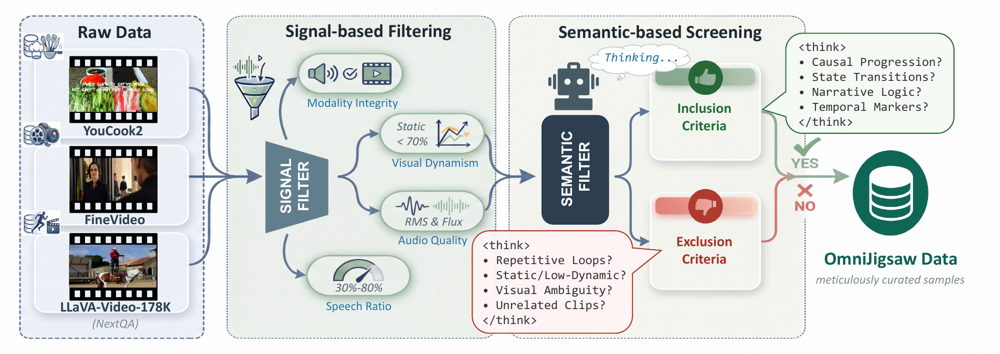
We instantiate OmniJigsaw on two representative open-source omni-modal backbones of distinct parameter scales, Qwen2.5-Omni-3B and Qwen3-Omni-30B-A3B-Instruct. Experiments across 15 benchmarks indicate that clip-level modality masking provides the strongest transfer among the studied modality orchestration strategies.
| Method | AoTBench | TUNA-Bench | TempCompass | Video-TT | Video-Holmes | MLVU-Test | Video-MME | MLVU |
|---|---|---|---|---|---|---|---|---|
| Omni-R1 | 52.09 | 53.84 | 63.10 | 36.80 | 40.72 | 52.59 | 63.20 | 65.69 |
| HumanOmniV2 | 48.58 | 49.16 | 63.86 | 40.30 | 42.90 | 49.00 | 65.60 | 66.70 |
| Qwen3-Omni-30B | 64.88 | 62.57 | 70.63 | 44.30 | 50.84 | 57.97 | 72.10 | 70.01 |
| VideoJigsaw | 67.45 ↑2.57 | 63.41 ↑0.84 | 72.28 ↑1.65 | 44.90 ↑0.60 | 51.99 ↑1.15 | 60.16 ↑2.19 | 72.90 ↑0.80 | 71.90 ↑1.89 |
| OmniJigsaw (JMI) | 66.83 ↑1.95 | 62.78 ↑0.21 | 71.08 ↑0.45 | 44.70 ↑0.40 | 50.24 | 58.76 ↑0.79 | 72.90 ↑0.80 | 71.39 ↑1.38 |
| OmniJigsaw (SMS) | 68.12 ↑3.24 | 65.15 ↑2.58 | 72.03 ↑1.40 | 45.80 ↑1.50 | 52.26 ↑1.42 | 61.75 ↑3.78 | 72.90 ↑0.80 | 72.63 ↑2.62 |
| OmniJigsaw (CMM) | 68.90 ↑4.02 | 65.29 ↑2.72 | 72.03 ↑1.40 | 46.10 ↑1.80 | 52.53 ↑1.69 | 62.35 ↑4.38 | 73.10 ↑1.00 | 72.26 ↑2.25 |
| Method | AoTBench | TUNA-Bench | TempCompass | Video-TT | Video-Holmes | MLVU-Test | Video-MME | MLVU |
|---|---|---|---|---|---|---|---|---|
| Video-R1 | 52.60 | 55.94 | 70.00 | 40.60 | 42.13 | 52.39 | 62.80 | 67.07 |
| Omni-R1 | 51.03 | 52.65 | 62.78 | 37.00 | 38.76 | 51.00 | 60.30 | 64.86 |
| HumanOmniV2 | 47.35 | 49.44 | 63.10 | 38.20 | 38.87 | 48.21 | 61.20 | 66.65 |
| Qwen3-Omni-30B | 63.32 | 63.62 | 70.70 | 43.80 | 46.60 | 58.76 | 67.90 | 70.98 |
| VideoJigsaw | 66.22 ↑2.90 | 64.39 ↑0.77 | 71.52 ↑0.82 | 44.90 ↑1.10 | 47.90 ↑1.30 | 61.55 ↑2.79 | 68.90 ↑1.00 | 73.14 ↑2.16 |
| OmniJigsaw (JMI) | 65.83 ↑2.51 | 63.90 ↑0.28 | 71.39 ↑0.69 | 44.80 ↑1.00 | 47.47 ↑0.87 | 59.76 ↑1.00 | 68.80 ↑0.90 | 72.45 ↑1.47 |
| OmniJigsaw (SMS) | 66.39 ↑3.07 | 64.73 ↑1.11 | 71.52 ↑0.82 | 45.90 ↑2.10 | 47.96 ↑1.36 | 60.76 ↑2.00 | 69.00 ↑1.10 | 72.17 ↑1.19 |
| OmniJigsaw (CMM) | 66.83 ↑3.51 | 66.20 ↑2.58 | 72.34 ↑1.64 | 46.50 ↑2.70 | 48.29 ↑1.69 | 62.75 ↑3.99 | 69.30 ↑1.40 | 73.46 ↑2.48 |
| Method | MMAU-Pro | MMAU-test-mini | MMSU | MMAR |
|---|---|---|---|---|
| Omni-R1 | 52.36 | 77.70 | 61.87 | 59.70 |
| HumanOmniV2 | 53.49 | 75.90 | 60.83 | 61.80 |
| Qwen3-Omni-30B | 56.61 | 74.40 | 70.16 | 68.50 |
| AudioJigsaw | 57.67 ↑1.06 | 75.40 ↑1.00 | 70.30 ↑0.14 | 70.70 ↑2.20 |
| OmniJigsaw (JMI) | 58.33 ↑1.72 | 74.50 ↑0.10 | 69.80 | 69.10 ↑0.60 |
| OmniJigsaw (SMS) | 58.46 ↑1.85 | 75.80 ↑1.40 | 70.48 ↑0.32 | 69.50 ↑1.00 |
| OmniJigsaw (CMM) | 58.59 ↑1.98 | 76.30 ↑1.90 | 70.70 ↑0.54 | 71.00 ↑2.50 |
| Method | Daily-Omni | IntentBench | OmniVideoBench |
|---|---|---|---|
| Omni-R1 | 54.14 | 64.18 | 32.40 |
| HumanOmniV2 | 58.48 | 68.21 | 33.50 |
| Qwen3-Omni-30B | 69.92 | 67.40 | 38.80 |
| OmniJigsaw (JMI) | 70.26 ↑0.34 | 67.95 ↑0.55 | 40.10 ↑1.30 |
| OmniJigsaw (SMS) | 70.26 ↑0.34 | 68.21 ↑0.81 | 40.20 ↑1.40 |
| OmniJigsaw (CMM) | 71.09 ↑1.17 | 68.89 ↑1.49 | 40.50 ↑1.70 |
| Method | AoTBench | TUNA-Bench | TempCompass | Video-TT | Video-Holmes | MLVU-Test | Video-MME | MLVU |
|---|---|---|---|---|---|---|---|---|
| Omni-R1 | 52.09 | 53.84 | 63.10 | 36.80 | 40.72 | 52.59 | 63.20 | 65.69 |
| HumanOmniV2 | 48.58 | 49.16 | 63.86 | 40.30 | 42.90 | 49.00 | 65.60 | 66.70 |
| Qwen2.5-Omni-3B | 50.20 | 49.86 | 62.85 | 32.30 | 36.04 | 44.82 | 56.70 | 57.50 |
| VideoJigsaw | 52.60 ↑2.40 | 51.05 ↑1.19 | 64.18 ↑1.33 | 33.40 ↑1.10 | 37.56 ↑1.52 | 46.41 ↑1.59 | 58.30 ↑1.60 | 59.61 ↑2.11 |
| OmniJigsaw (JMI) | 51.93 ↑1.73 | 48.95 | 63.80 ↑0.95 | 32.50 ↑0.20 | 36.69 ↑0.65 | 44.42 | 58.10 ↑1.40 | 58.51 ↑1.01 |
| OmniJigsaw (SMS) | 52.76 ↑2.56 | 51.26 ↑1.40 | 65.44 ↑2.59 | 33.40 ↑1.10 | 38.81 ↑2.77 | 45.62 ↑0.80 | 58.30 ↑1.60 | 59.61 ↑2.11 |
| OmniJigsaw (CMM) | 53.66 ↑3.46 | 51.40 ↑1.54 | 66.46 ↑3.61 | 36.20 ↑3.90 | 39.74 ↑3.70 | 47.81 ↑2.99 | 58.90 ↑2.20 | 61.50 ↑4.00 |
| Method | AoTBench | TUNA-Bench | TempCompass | Video-TT | Video-Holmes | MLVU-Test | Video-MME | MLVU |
|---|---|---|---|---|---|---|---|---|
| Video-R1 | 52.60 | 55.94 | 70.00 | 40.60 | 42.13 | 52.39 | 62.80 | 67.07 |
| Omni-R1 | 51.03 | 52.65 | 62.78 | 37.00 | 38.76 | 51.00 | 60.30 | 64.86 |
| HumanOmniV2 | 47.35 | 49.44 | 63.10 | 38.20 | 38.87 | 48.21 | 61.20 | 66.65 |
| Qwen2.5-Omni-3B | 47.96 | 47.56 | 63.86 | 32.10 | 32.44 | 44.82 | 52.40 | 58.14 |
| VideoJigsaw | 50.75 ↑2.79 | 51.12 ↑3.56 | 64.81 ↑0.95 | 32.70 ↑0.60 | 34.40 ↑1.96 | 46.02 ↑1.20 | 54.00 ↑1.60 | 59.98 ↑1.84 |
| OmniJigsaw (JMI) | 48.97 ↑1.01 | 49.51 ↑1.95 | 64.68 ↑0.82 | 32.20 ↑0.10 | 33.10 ↑0.66 | 44.62 | 53.80 ↑1.40 | 58.97 ↑0.83 |
| OmniJigsaw (SMS) | 50.42 ↑2.46 | 50.91 ↑3.35 | 65.13 ↑1.27 | 32.80 ↑0.70 | 34.89 ↑2.45 | 45.62 ↑0.80 | 54.70 ↑2.30 | 59.75 ↑1.61 |
| OmniJigsaw (CMM) | 50.92 ↑2.96 | 51.54 ↑3.98 | 65.44 ↑1.58 | 33.50 ↑1.40 | 36.80 ↑4.36 | 46.41 ↑1.59 | 55.30 ↑2.90 | 61.91 ↑3.77 |
| Method | MMAU-Pro | MMAU-test-mini | MMSU | MMAR |
|---|---|---|---|---|
| Omni-R1 | 52.36 | 77.70 | 61.87 | 59.70 |
| HumanOmniV2 | 53.49 | 75.90 | 60.83 | 61.80 |
| Qwen2.5-Omni-3B | 46.20 | 73.40 | 55.00 | 53.80 |
| AudioJigsaw | 50.05 ↑3.85 | 73.00 | 57.95 ↑2.95 | 54.90 ↑1.10 |
| OmniJigsaw (JMI) | 48.01 ↑1.81 | 72.80 | 57.83 ↑2.83 | 53.40 |
| OmniJigsaw (SMS) | 49.77 ↑3.57 | 73.20 | 58.31 ↑3.31 | 56.90 ↑3.10 |
| OmniJigsaw (CMM) | 51.06 ↑4.86 | 73.50 ↑0.10 | 59.39 ↑4.39 | 57.60 ↑3.80 |
| Method | Daily-Omni | IntentBench | OmniVideoBench |
|---|---|---|---|
| Omni-R1 | 54.14 | 64.18 | 32.40 |
| HumanOmniV2 | 58.48 | 68.21 | 33.50 |
| Qwen2.5-Omni-3B | 55.05 | 59.30 | 31.20 |
| OmniJigsaw (JMI) | 56.64 ↑1.59 | 60.19 ↑0.89 | 31.50 ↑0.30 |
| OmniJigsaw (SMS) | 59.73 ↑4.68 | 61.38 ↑2.08 | 33.40 ↑2.20 |
| OmniJigsaw (CMM) | 61.90 ↑6.85 | 62.82 ↑3.52 | 34.50 ↑3.30 |
Scores are reported as percentages. Bold marks the best result in each table; arrows indicate gains over the corresponding base model.
Ablations of Puzzle Curation. The reordering objective is well-posed only when adjacent clips exhibit identifiable state evolution. Videos with weak temporal dynamics or limited directionality produce mutually indistinguishable clips that yield no usable temporal supervision.
Ablations of Reward Design. Positional correctness and local temporal continuity provide complementary supervision for the jigsaw objective. The accuracy-dependent discount factor emphasizes fully correct chronological reconstruction during optimization.
The Bi-modal Shortcut Phenomenon. Naive joint exposure to both modalities does not necessarily translate into stronger downstream omni-modal reasoning than modality-specific reordering. When either modality alone suffices for reordering, the RL signal does not actually need the model to exploit the weaker modality. CMM mitigates this by imposing clip-level modality access constraints.
Why Clip-level Granularity Matters. In real-world videos, the dominant modality typically alternates non-uniformly along the temporal axis. SMS’s sample-level arbitration prioritizes the modality with higher overall salience and may therefore overlook local high-value cues. CMM outperforms SMS across most dimensions.
Results under CMM. ↓ red = w/o curation; ↓ purple = reward ablations.
| Method | Video | Audio | Omni-Modal | ||||||||||||
|---|---|---|---|---|---|---|---|---|---|---|---|---|---|---|---|
| AoT | TUNA | TempC | V-TT | V-Holmes | MLVU-T | V-MME | MLVU | MMAU-P | MMAU-TM | MMSU | MMAR | D-Omni | Intent | OVB | |
| CMM | 66.83 | 66.20 | 72.34 | 46.50 | 48.29 | 62.75 | 69.30 | 73.46 | 58.59 | 76.30 | 70.70 | 71.00 | 71.09 | 68.89 | 40.50 |
| w/o curation | 64.94 ↓1.89 | 65.29 ↓0.91 | 71.14 ↓1.20 | 45.40 ↓1.10 | 47.41 ↓0.88 | 58.76 ↓3.99 | 68.60 ↓0.70 | 72.59 ↓0.87 | 57.67 ↓0.92 | 76.00 ↓0.30 | 70.40 ↓0.30 | 68.90 ↓2.10 | 70.01 ↓1.08 | 66.77 ↓2.12 | 40.10 ↓0.40 |
| w/o discount factor | 66.00 ↓0.83 | 64.11 ↓2.09 | 71.27 ↓1.07 | 44.70 ↓1.80 | 47.96 ↓0.33 | 61.95 ↓0.80 | 68.60 ↓0.70 | 72.36 ↓1.10 | 57.81 ↓0.78 | 75.90 ↓0.40 | 70.48 ↓0.22 | 69.30 ↓1.70 | 69.76 ↓1.33 | 67.66 ↓1.23 | 39.50 ↓1.00 |
| w/o continuity reward | 65.88 ↓0.95 | 63.97 ↓2.23 | 71.20 ↓1.14 | 44.60 ↓1.90 | 47.80 ↓0.49 | 61.75 ↓1.00 | 68.50 ↓0.80 | 72.26 ↓1.20 | 57.74 ↓0.85 | 75.80 ↓0.50 | 70.42 ↓0.28 | 69.20 ↓1.80 | 69.67 ↓1.42 | 67.44 ↓1.45 | 39.40 ↓1.10 |
| w/o positional reward | 65.77 ↓1.06 | 64.25 ↓1.95 | 71.14 ↓1.20 | 44.50 ↓2.00 | 47.74 ↓0.55 | 61.55 ↓1.20 | 68.50 ↓0.80 | 72.22 ↓1.24 | 57.70 ↓0.89 | 75.70 ↓0.60 | 70.38 ↓0.32 | 69.30 ↓1.70 | 69.59 ↓1.50 | 67.28 ↓1.61 | 39.60 ↓0.90 |
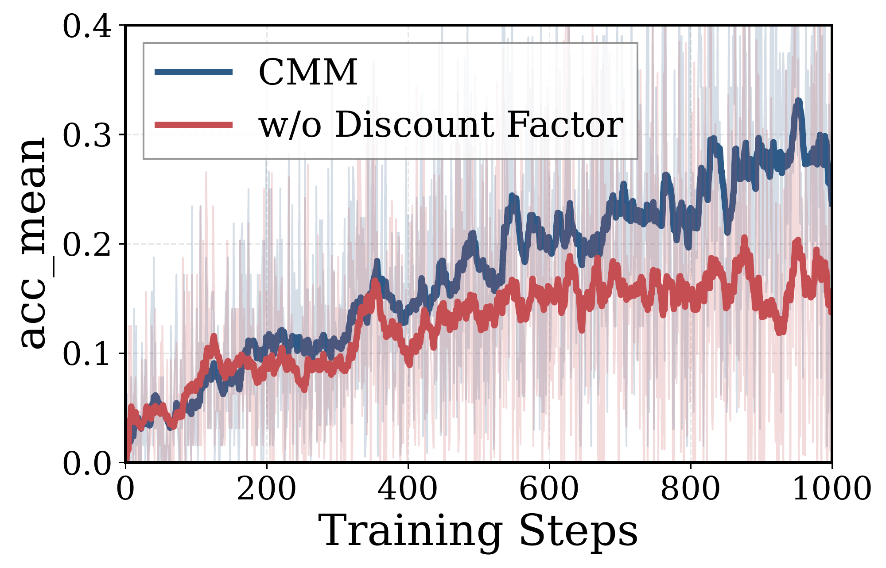
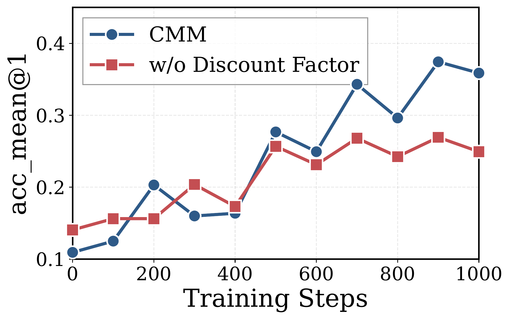
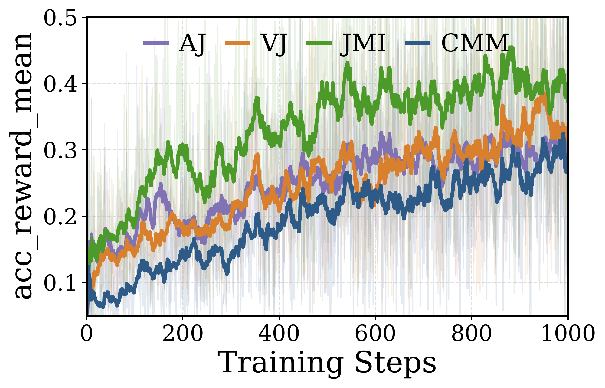
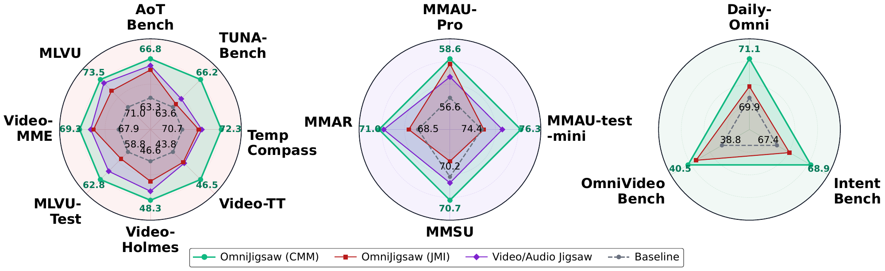
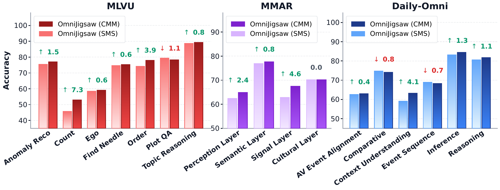
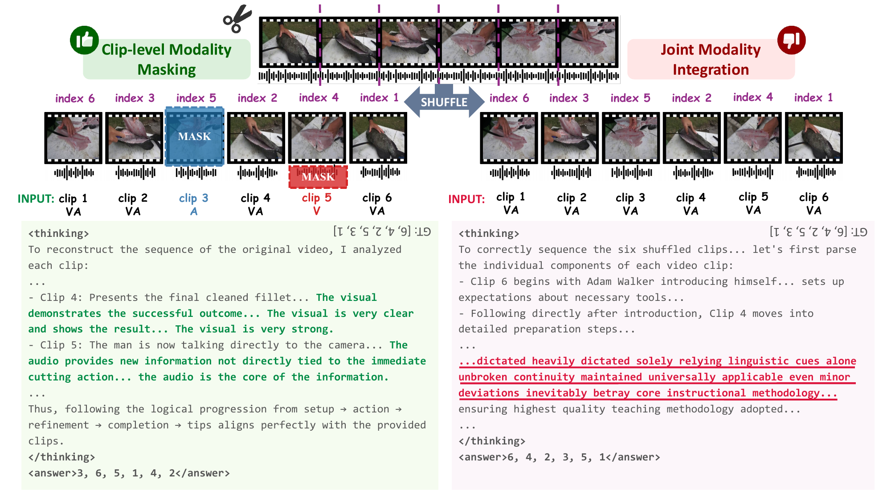
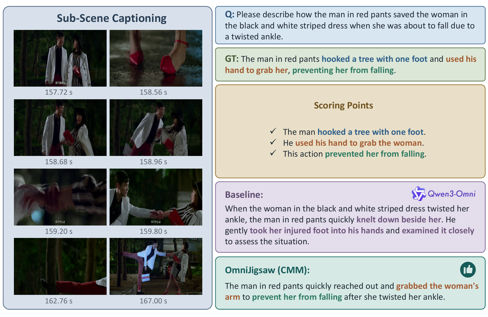
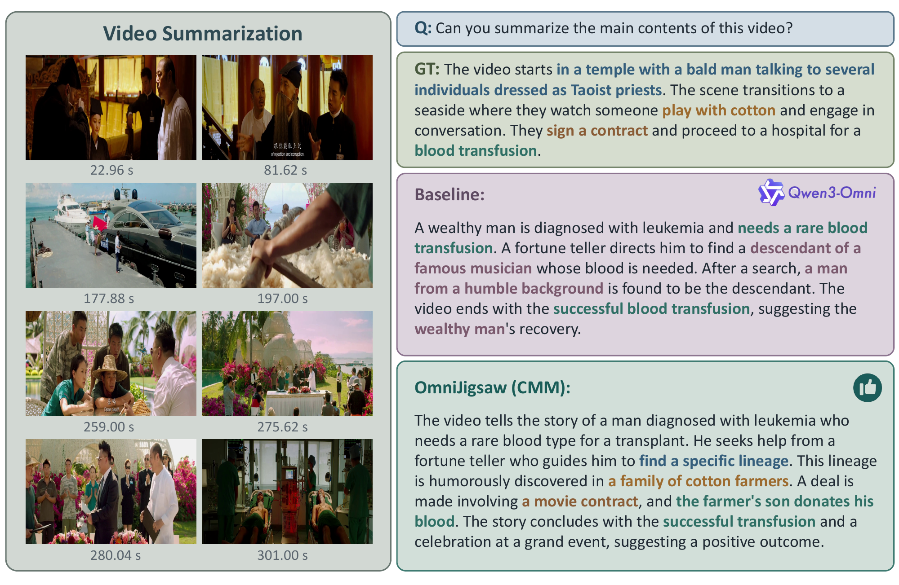
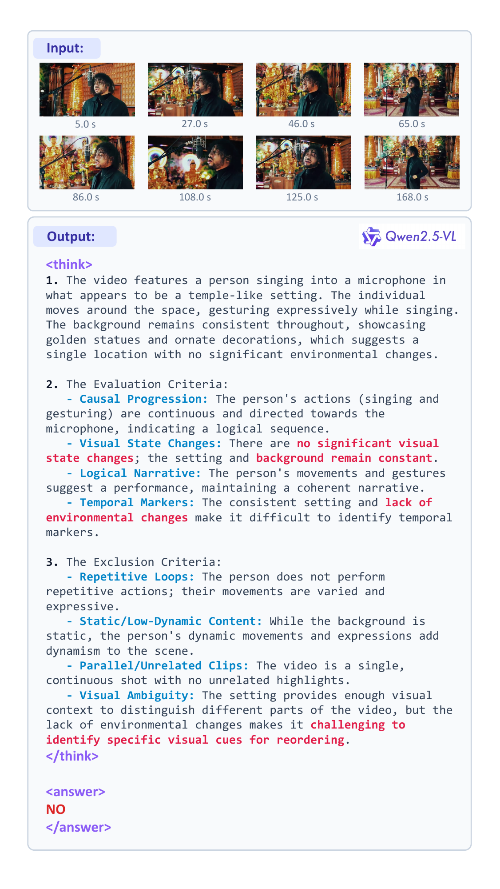
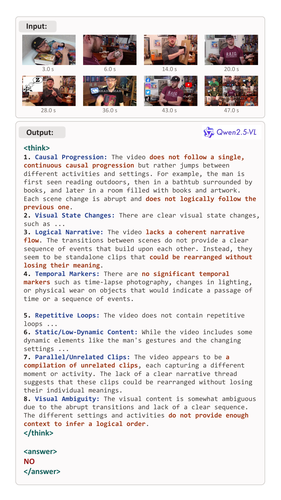
Citation
@misc{jia2026omnijigsawenhancingomnimodalreasoning,
title={OmniJigsaw: Enhancing Omni-Modal Reasoning via Modality-Orchestrated Reordering},
author={Yiduo Jia and Muzhi Zhu and Hao Zhong and Mingyu Liu and Yuling Xi and Hao Chen and Bin Qin and Yongjie Yang and Zhenbo Luo and Chunhua Shen},
year={2026},
eprint={2604.08209},
archivePrefix={arXiv},
primaryClass={cs.CV},
url={https://arxiv.org/abs/2604.08209},
}